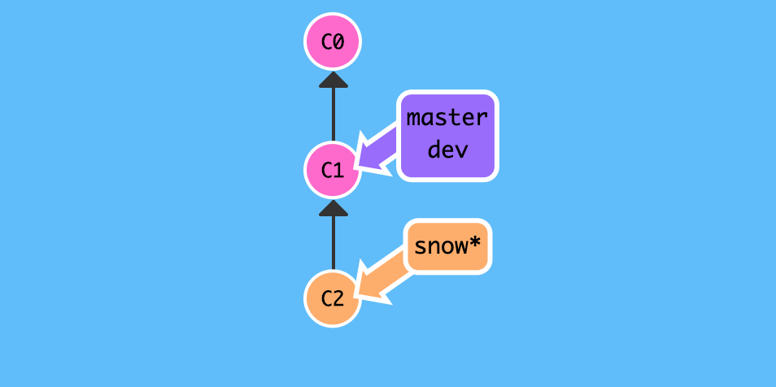

1. 紧急修复
和往常一样,每个人团队开发者都在自己的本地分支上进行日常工作,相互独立又相互联系,一直以来相安无事,可是某天下午,上级领导突然急冲冲的打电话告诉你线上出bug了,需要你紧急修复,下班之前必须解决!
我们天生就是创造 bug 的特殊群体,每天都在和各种各样的 bug 打交道,早已经习惯了这样的工作节奏,再也没有当初刚刚遇到紧急问题的手足无措,先喝杯茶,冷静一下,然后汇报领导说:放心吧!保证30min 内解决问题!
1.1. 背景
学习了分支操作的相关知识,团队内部就基本的开发流程达成一致:
假设线上是主干 master 分支,开发是 dev 分支,团队成员是自定义 custom 分支,平时开发时在大家在各自 custom 分支上工作,完成分配任务后再合并到开发 dev 分支,等到开发分支功能稳定后,由项目领导负责合并到主干分支 master .
上述流程只是开发流程的简化版,实际情况更加复杂,后续再介绍
gitflow工作流相关知识.
由于是线上出现 bug,理所当然是基于 master 分支检出临时分支,修复分支代号为 issue-110,然后定位 bug 并提交,最后再合并到 master 分支,如此一来成功修复 bug,完成既定任务,心安理得准备下班回家!
如果真的向上述步骤那样操作,显然还不够冷静,刚才那一杯茶算是白喝了!因为这样操作可能会丢失现场数据,那很多工作岂不是白做了,下面简单演示一下:
1.1.1. 错误示例
(一). 事发前正在自定义的 snow 分支上愉快编码中...
# 线上分支 `master`,开发分支 `dev`,自定义分支 `snow`,当前正处于自定义分支
$ git branch
dev
master
* snow
# 接到领导电话前正在自定义 `snow` 分支上进行愉快编码中...
$ echo "Happy coding" >> test.txt
$ git add test.txt
$ git commit -m "Happy coding"

(二). 事发时直接检出主分 master 分支,并紧急修复 bug .
(2.1) 基于 master 分支检出 issue-110 分支,并修复提交.
# 注意: 事发时正在思考人生,此时更改尚未添加到暂存区!
$ echo "who am i" >> test.txt
# 当前情况下,默认不允许直接切换到其他分支,因为工作区更改会被重写,这里为了演示错误示例,强制切换!
$ git checkout -f master
# 基于主干 `master` 分支检出修复 `issue-110`分支
$ git checkout -b issue-110
Switched to a new branch 'issue-110'
# 定位线上 `bug`并修复,假设将 `fast forward` 更改为 `fast forward not recommend`,瞬间修复 `bug`有没有!
$ cat test.txt
add test.txt
see https://snowdreams1006.github.io/git/usage/remote-repository.html
learn git branch
see https://snowdreams1006.github.io/git/usage/branch-overview.html
git commit c1
git commit c2 and c3
git checkout -b dev
fast forward
$ vim test.txt
$ cat test.txt
add test.txt
see https://snowdreams1006.github.io/git/usage/remote-repository.html
learn git branch
see https://snowdreams1006.github.io/git/usage/branch-overview.html
git commit c1
git commit c2 and c3
git checkout -b dev
fast forward not recommend
# 修复 `bug` 后,提交更改并备注已修复
$ git add test.txt
$ git commit -m "fix bug about issue-110"
[issue-110 e60c8ad] fix bug about issue-110
1 file changed, 1 insertion(+), 1 deletion(-)
sunpodeMacBook-Pro:git-demo sunpo$ git status
On branch issue-110
nothing to commit, working tree clean
$

(2.1) 切换到主干 master 分支,并合并修复 issue-110 分支
# 切换回 `master` 分支,合并修复 `issue-110` 分支
$ git checkout master
Switched to branch 'master'
Your branch is up to date with 'origin/master'.
$ git merge issue-110
Updating 3fe94c0..e60c8ad
Fast-forward
test.txt | 2 +-
1 file changed, 1 insertion(+), 1 deletion(-)
# 验证 `bug` 已修复: 更改为 `fast forward not recommend`
$ cat test.txt
add test.txt
see https://snowdreams1006.github.io/git/usage/remote-repository.html
learn git branch
see https://snowdreams1006.github.io/git/usage/branch-overview.html
git commit c1
git commit c2 and c3
git checkout -b dev
fast forward not recommend
$

(三). 事发后切换回自定义 snow 分支,打算下班回家.
# 切换回 `snow` 分支,发现丢失了事发前的未保存更改:`who am i`
$ git checkout snow
Switched to branch 'snow'
$ cat test.txt
add test.txt
see https://snowdreams1006.github.io/git/usage/remote-repository.html
learn git branch
see https://snowdreams1006.github.io/git/usage/branch-overview.html
git commit c1
git commit c2 and c3
git checkout -b dev
fast forward
Happy coding
$

现在还打算下班吗?你所做的更改因为没有提交或者不能提交造成全部丢失!
结果
因为手头工作进行到一半无法提交或者忘记提交等原因,为了临时修复紧急 bug 而直接切换到目标分支再回来时发现更改全部丢失,相当于那部分工作白忙活了!
1.1.2. 正确示例
经过上述错误示例的惨痛教训后,再也不敢轻易切换分支了,原因在于工作区更改并没有被提交,或者说不能提交,如果能够有一种机制来保护案发现场,这样我们就能放心切换到其他分支工作,回来时一切如初,那该多好?
幸运的是,git 确实提供这么一种机制,git stash 命令临时存储工作区,类似"草稿箱"作用.
(一). 恢复工作区丢失更改,并使用 git stash 命令保存现场.
# 修复工作区丢失更改: 同样未添加到暂存区
$ echo "learn git stash" >> test.txt
$ cat test.txt
add test.txt
see https://snowdreams1006.github.io/git/usage/remote-repository.html
learn git branch
see https://snowdreams1006.github.io/git/usage/branch-overview.html
git commit c1
git commit c2 and c3
git checkout -b dev
fast forward
Happy coding
learn git stash
# 保护现场: 存储到"草稿箱"
$ git stash
Saved working directory and index state WIP on snow: 93227ba Happy coding
(二). 切换到开发 dev 分支并合并修复 issue-110 分支.
# 切换到开发 `dev` 分支
$ git checkout dev
Switched to branch 'dev'
sunpodeMacBook-Pro:git-demo sunpo$ git status
On branch dev
nothing to commit, working tree clean
# 合并修复 `issue-110` 分支
$ git merge issue-110
Updating 3fe94c0..e60c8ad
Fast-forward
test.txt | 2 +-
1 file changed, 1 insertion(+), 1 deletion(-)
sunpodeMacBook-Pro:git-demo sunpo$ git status
On branch dev
nothing to commit, working tree clean
$
(三). 切换回自定义 snow 分支,并恢复工作现场.
# 切换回自定义 `snow` 分支
$ git checkout snow
Switched to branch 'snow'
sunpodeMacBook-Pro:git-demo sunpo$ git status
On branch snow
nothing to commit, working tree clean
$
git status 命令返回结果怎么显示工作区是干净的,好不容易才将丢失的更改找回来怎么又不见了?!逗我玩?
冷静,冷静,不要慌,既然工作现场已经保存到"草稿箱",那我们想要找回总要去"草稿箱"才能取出来吧?现在让我们看一下"草稿箱"有没有我们的工作现场?
# 查看存储的"草稿箱"列表
$ git stash list
stash@{0}: WIP on snow: 93227ba Happy coding
$
这里的
stash@{0}是草稿 id,因为"草稿箱"允许保存多条草稿!
现在放心了吧,保存的"草稿"安然无恙躺在未知的某个地方,现在我们想办法恢复回工作区即可!
git stash apply恢复草稿,然后git stash drop删除草稿git stash pop恢复并删除草稿
# 恢复工作现场
$ git stash pop
On branch snow
Changes not staged for commit:
(use "git add <file>..." to update what will be committed)
(use "git checkout -- <file>..." to discard changes in working directory)
modified: test.txt
no changes added to commit (use "git add" and/or "git commit -a")
Dropped refs/stash@{0} (b0c8ddc034d21f31204c82e9838fc5d4c01a49a8)
# 工作现场已恢复,更改未添加到暂存区,`learn git stash` 又恢复了!
$ git status
On branch snow
Changes not staged for commit:
(use "git add <file>..." to update what will be committed)
(use "git checkout -- <file>..." to discard changes in working directory)
modified: test.txt
no changes added to commit (use "git add" and/or "git commit -a")
$ cat test.txt
add test.txt
see https://snowdreams1006.github.io/git/usage/remote-repository.html
learn git branch
see https://snowdreams1006.github.io/git/usage/branch-overview.html
git commit c1
git commit c2 and c3
git checkout -b dev
fast forward
Happy coding
learn git stash
结果
不论手头工作有没有提交,一旦工作区保存到"草稿箱"后,就放心大胆切换分支进行工作,回来时岁月静好,一切如初!
1.2. 小结
紧急修复 bug 时,可以通过 git stash 保护工作现场,然后再切换到目标分支,检出修复分支,完成修复后切换到目标分支,合并修复分支,最后删除修复分支,此时再切换回本地分支后一切如初!
- 工作区更改添加到"草稿箱" :
git stash,支持多次添加到"草稿箱" - 列出"草稿箱"内容 :
git stash list - 恢复"草稿箱"内容 :
git stash apply - 删除"草稿箱"内容 :
git stash drop - 恢复并删除"草稿箱"内容 :
git stash pop - 恢复|删除指定"草稿箱"内容 :
git stash <stash-id>,例如git stash apply stash@{0}
作者: 雪之梦技术驿站
来源: 雪之梦技术驿站
本文原创发布于「雪之梦技术驿站」,转载请注明出处,谢谢合作!